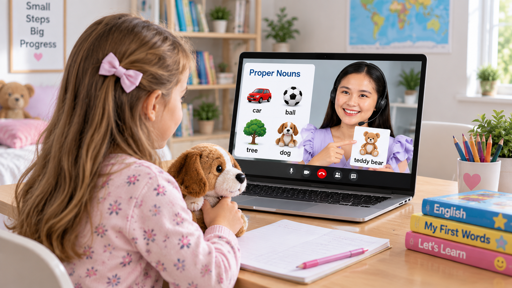

Kids discover.
Fun, supportive lessons where curiosity becomes confidence.
Explore Kids EnglishPersonalized online English lessons for kids, teens, and adults—from beginner to advanced. Choose what you want to improve, and we'll help you take the right path.

English learning designed around your age, level, goals, and everyday life.

Fun, supportive lessons where curiosity becomes confidence.
Explore Kids English
English for school, friendships, ideas, and bigger futures.
Explore Teen EnglishPractical English for work, travel, and life-changing conversations.
Explore Adult EnglishTudlo tutors make every lesson useful, encouraging, and focused on the English you want to use in the real world.
Know what you're working toward, whether it's conversation, school, work, or an exam.
Start where you are and build the English you need through a program suited to your level.
Lessons are organized around useful topics, real situations, and the outcomes you want to achieve.
Prepare for Cambridge, PET, IELTS, and school tests, or focus on improving your speaking and writing skills.
Tell me where you are, what you want to achieve, and where you need the most help. Together, we’ll create a practical learning plan that fits your goals, schedule, and learning style.
Share your current English level, your goals, and the areas you want to improve. Whether you need English for work, travel, school, interviews, or everyday conversations, we’ll start from where you are.
We’ll choose the right lesson focus, schedule, and learning materials based on your needs. Each lesson is designed to help you make steady progress and feel more confident using English.
Book your first lesson and start learning. You’ll get personalized guidance, practical practice, and constructive feedback to help you use English more naturally and confidently.
I believe learning English should be practical, encouraging, and tailored to you. As your teacher, I’ll help you improve the skills that matter most—whether that’s speaking with confidence, communicating at work, preparing for an important goal, or simply feeling more comfortable using English every day.
Improve your grammar, vocabulary, reading, listening, and speaking through practical lessons designed around real-life communication. Build a solid foundation and use English with greater confidence.
Explore General EnglishGet more comfortable expressing yourself in English. Practice real conversations, improve your pronunciation, expand your vocabulary, and receive supportive feedback along the way.
Improve Your Speaking →Build the English skills you need for work, exams, and job interviews. Practice professional communication, strengthen your confidence, and prepare with focused lessons based on your specific goals.
Reach Your GoalFrom first sentences to bigger conversations, Tudlo learners and families share the moments that made a difference.
I have to tell you that we are so happy with you. Marina and Begoña have had very good results

I joined for travel, but I stayed because I found the confidence to have conversations I had been avoiding for years.

I feel very lucky to have Aivy as my English teacher. She is not only a great professional but also such a curious and engaging person who makes every class interesting and pleasant. Learning with her is a real pleasure! She has a fantastic ability to adapt to your needs and keeps you motivated all the time. Her lessons are well-structured, dynamic, and full of interesting conversation. You can really see her passion for teaching. I have improved a lot thanks to her support and patience. I would highly recommend her to anyone who wants to learn English in an effective and enjoyable way.
Sin duda, una excelente docente y una gran profesional. Tiene una forma de enseñar muy especial: es paciente, amable, clara y siempre está dispuesta a ayudar. Sus clases son dinámicas, interesantes y motivadoras, y consigue que aprender inglés no se sienta como una obligación, sino como una experiencia agradable. Valoro muchísimo su dedicación, su empatía y la manera en que se preocupa por que realmente comprendamos y avancemos. Una profesora que transmite confianza, entusiasmo y amor por la enseñanza. ¡La recomiendo al 100 %!

She is an incredible teacher. Her classes are dynamic, well-structured, and genuinely engaging. What stands out most about her is her ability to explain complex concepts clearly—she breaks down tricky grammar points and makes them easy to grasp right away. She adapts completely to your specific level and individual needs. Whether you want to boost your conversational confidence, prepare for an exam, or focus on professional English, she tailors every lesson to your personal goals and learning pace. Her patience, encouragement, and supportive approach make you feel completely comfortable making mistakes and speaking up. I couldn't recommend her more highly!
A child can learn after school, a teen can prepare for a presentation, and an adult can practice after work. Choose one session or build a routine—your plan stays flexible.

Not sure which path fits? We'll help you find the one that does.
We start with you. We look at your current English level, your goals, your age, and the skills you want to improve. Whether you want to build everyday communication, support your studies, prepare for work, or simply feel more confident speaking English, we'll help you find the learning path that fits.
Absolutely. You don't need to have a strong English foundation to get started. Lessons can begin with the basics and gradually build your vocabulary, grammar, listening, speaking, and confidence at a comfortable pace.
Yes. Parents can arrange online English lessons for their children. Lessons are adapted to the learner's age, English level, interests, and goals, with a supportive approach that makes learning engaging and comfortable.
Yes. Tudlo is for kids, teens, and adults, from beginner to advanced levels. Lessons are adapted to each learner, whether the goal is school English, everyday communication, travel, work, exams, or becoming a more confident English speaker.
Lessons take place live online with your tutor. You can learn from wherever you are without needing to travel to a classroom. During lessons, you'll work on practical English skills through conversation, guided activities, explanations, and practice based on your level and goals.
A trial lesson is a chance to meet your tutor, talk about your goals, and experience how Tudlo lessons work. We'll get a sense of your current English level and identify areas you can work on. Most importantly, it's an opportunity for you to see whether Tudlo feels like the right fit before continuing.
We look at how you use English, not just a test score. Your tutor can consider your speaking, listening, vocabulary, grammar, and ability to communicate. This helps us understand where you are now and choose lessons that are neither too easy nor too difficult.
Yes. That's at the heart of Tudlo. Your lessons can focus on the English you actually need—whether that's speaking more naturally, improving pronunciation, preparing for an exam, succeeding at school or work, traveling, or simply becoming more confident in everyday conversations.
Tell us who's learning and what you want to work on. We'll help you find the right path.